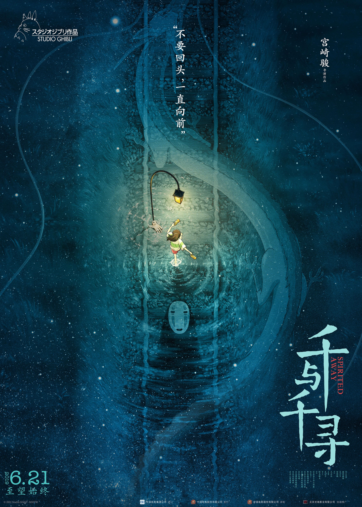

HOME

Spirited Away
千与千寻
(2001)
《千与千寻》是由吉卜力工作室制作、宫崎骏担任导演和剧本。在2001年7月20日上映的日本动画电影。《千与千寻》讲述10岁的小女孩荻野千寻与其家人误闯了神灵世界，之后经历成长并不断寻找方法来令自己和父母返回人类世界的故事。宫崎骏制作这部电影是根据他的朋友奥田诚治的女儿为灵感而编写的。宫崎骏粉丝和朋友皮克斯动画师约翰·拉塞特说服华特迪士尼影业购买了电影的北美发行权并担任其英文版的执行制片人。
《千与千寻》此作品为宫崎骏带来事业上多项成就，超越了1997年美国影片《泰坦尼克号》在日本上映的票房成绩成为日本史上票房最高的电影。直到2021年才被《鬼灭之刃剧场版_无限列车篇》超越。《千与千寻》在2002年获得第52届柏林电影节金熊奖，第75届奥斯卡金像奖最佳动画片等十多项日本国内外电影大奖。《Time Out》杂志将此列为史上前15大动画电影的首位等等并在2016年英国BBC赞助的民意调查中，被来自各地的评论家评为“21世纪100部最伟大的电影”中的第四名。